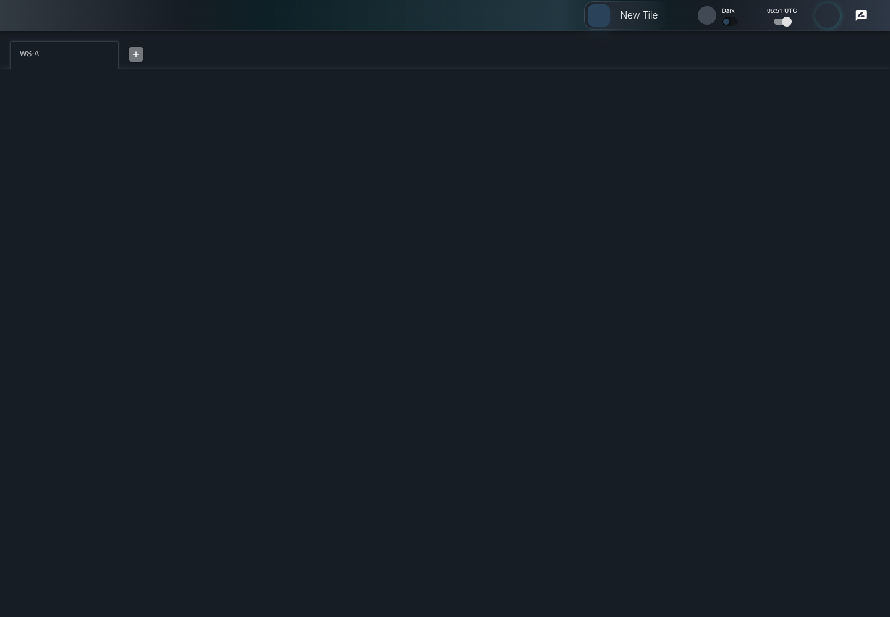
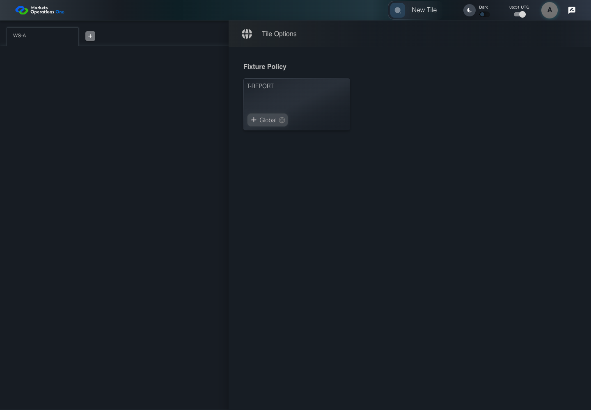
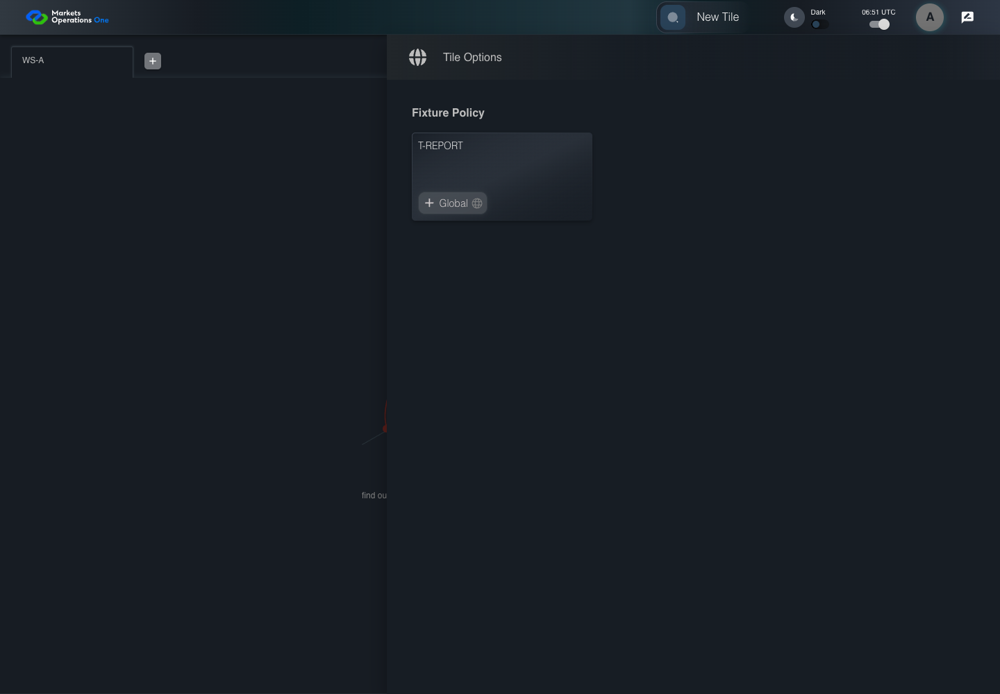

KNOW-001 actual current BFF catalog eligibility
PASS · application/run-073/know-001-actual-current-bff-catalog-eligibility-349aaa104a3e-attempt-1 · ACTUAL_APPLICATION_LOCAL_SERVICES
Actual MFE and current single-ui-bff auth controller, AdminModuleUtil catalog filtering, AuthFilterExecutor, PostgreSQL18.4 with exact migrations, and JPA repositories. Synthetic local OUD identity Alice and controlled EMS2 entity response. External EMS3 adapter disabled; isolated Spring Boot3 bootstrap replaces production Boot4 configuration. KNOW014 records the missing shell open-authorization operation. KNOW015/017 use proposed URL navigation overlays because canonical targets remain undefined. No protected tenant fields, denial states, or production provider acceptance are fabricated.
2026-10-22T06:51:44.086Z to 2026-10-22T06:51:49.460Z
Assertions and result · Artifact manifest · Exact run inputs and source hashes
Result SHA-256:5e4e1f6cebaff520b5093d6793b4933f98ee64a6eba72b84730c20997c7de024Machine observations
- actual-catalog-seed.json
16230e6721731a30095967ff8bdd003c89d39c08f3f8ff0f48762076fc839a18 - actual-filtered-login.json
f2da6dae2cf45aef3ca13626181eaa9e59688e0069a7447ab601200a628d0580 - controlled-ems2-input.json
2cbb05bf703164e49671dd004be9ca556e27b65775cbe3ca6380405ab81f869f
Screenshot capture: CAPTURED. Named frames: 16.
Step screenshot bindings: COMPLETE. 15/15 canonical steps have execution screenshots.
Bindings measure structural coverage only. They do not establish screenshot content quality or relevance.
Screenshot content review: NOT_REVIEWED. Recorded context: 0/16 frames. Identical image bytes: 10 repeated frames. Recorded context does not establish human visual review.
Canonical step timeline
Given Alice uses an isolated browser profile with the synthetic identity and permissions defined for this case
Execution: PASSED.
1. step-01 Visible state after step 1: Given Alice uses an isolated browser profile with the synthetic identity and permissions defined for this case
2026-10-22T06:51:45.669Z · 1440×1000
Step: /Users/lushevol/code/github/ratan-release-impact/workbench/tasks/ui-test-coverage-20261022/test-cases.md:10464
SHA-256:99567bb3808af958792a6b38879d848938c08b417fb7dfff75bde75fcbd51a3aAnd the synthetic catalog uses exact tile titles "T-TRADE", "T-CASH", and "T-REPORT"
Execution: PASSED.
2. step-02 Visible state after step 2: And the synthetic catalog uses exact tile titles "T-TRADE", "T-CASH", and "T-REPORT"
2026-10-22T06:51:45.853Z · 1440×1000
Step: /Users/lushevol/code/github/ratan-release-impact/workbench/tasks/ui-test-coverage-20261022/test-cases.md:10465
SHA-256:99567bb3808af958792a6b38879d848938c08b417fb7dfff75bde75fcbd51a3aImage bytes match frame 1. An unchanged image can be valid for consecutive assertions. This match does not establish correct step content.
And T-TRADE requires entity "E-TRADE" and subject "S-VIEW"
Execution: PASSED.
3. step-03 Visible state after step 3: And T-TRADE requires entity "E-TRADE" and subject "S-VIEW"
2026-10-22T06:51:45.971Z · 1440×1000
Step: /Users/lushevol/code/github/ratan-release-impact/workbench/tasks/ui-test-coverage-20261022/test-cases.md:10466
SHA-256:99567bb3808af958792a6b38879d848938c08b417fb7dfff75bde75fcbd51a3aImage bytes match frame 2. An unchanged image can be valid for consecutive assertions. This match does not establish correct step content.
And T-CASH requires entity "E-CASH" and subject "S-VIEW"
Execution: PASSED.
4. step-04 Visible state after step 4: And T-CASH requires entity "E-CASH" and subject "S-VIEW"
2026-10-22T06:51:46.117Z · 1440×1000
Step: /Users/lushevol/code/github/ratan-release-impact/workbench/tasks/ui-test-coverage-20261022/test-cases.md:10467
SHA-256:99567bb3808af958792a6b38879d848938c08b417fb7dfff75bde75fcbd51a3aImage bytes match frame 3. An unchanged image can be valid for consecutive assertions. This match does not establish correct step content.
And T-REPORT permits entities "E-RR-A" and "E-RR-B" with an empty subject
Execution: PASSED.
5. step-05 Visible state after step 5: And T-REPORT permits entities "E-RR-A" and "E-RR-B" with an empty subject
2026-10-22T06:51:46.282Z · 1440×1000
Step: /Users/lushevol/code/github/ratan-release-impact/workbench/tasks/ui-test-coverage-20261022/test-cases.md:10468
SHA-256:99567bb3808af958792a6b38879d848938c08b417fb7dfff75bde75fcbd51a3aImage bytes match frame 4. An unchanged image can be valid for consecutive assertions. This match does not establish correct step content.
And Alice has only entity "E-RR-B" in the controlled EMS2 response
Execution: PASSED.
6. step-06 Visible state after step 6: And Alice has only entity "E-RR-B" in the controlled EMS2 response
2026-10-22T06:51:46.453Z · 1440×1000
Step: /Users/lushevol/code/github/ratan-release-impact/workbench/tasks/ui-test-coverage-20261022/test-cases.md:10469
SHA-256:99567bb3808af958792a6b38879d848938c08b417fb7dfff75bde75fcbd51a3aImage bytes match frame 5. An unchanged image can be valid for consecutive assertions. This match does not establish correct step content.
And the controlled login deployment enables the local Username and Password form
Execution: PASSED.
7. step-07 Visible state after step 7: And the controlled login deployment enables the local Username and Password form
2026-10-22T06:51:46.653Z · 1440×1000
Step: /Users/lushevol/code/github/ratan-release-impact/workbench/tasks/ui-test-coverage-20261022/test-cases.md:10470
SHA-256:99567bb3808af958792a6b38879d848938c08b417fb7dfff75bde75fcbd51a3aImage bytes match frame 6. An unchanged image can be valid for consecutive assertions. This match does not establish correct step content.
When Alice fills the textbox with placeholder "Enter Username" with "alice" on the Sign In page
Execution: PASSED.
8. step-08 Visible state after step 8: When Alice fills the textbox with placeholder "Enter Username" with "alice" on the Sign In page
2026-10-22T06:51:46.940Z · 1440×1000
Step: /Users/lushevol/code/github/ratan-release-impact/workbench/tasks/ui-test-coverage-20261022/test-cases.md:10471
SHA-256:7703fa3e0bc5f914369d1ff902654961f3cc3544f781f87c33d15b7a56e2b2fbAnd Alice fills the text input with placeholder "Enter Password" with the fixture password on the Sign In page
Execution: PASSED.
9. step-09 Visible state after step 9: And Alice fills the text input with placeholder "Enter Password" with the fixture password on the Sign In page
2026-10-22T06:51:47.283Z · 1440×1000
Step: /Users/lushevol/code/github/ratan-release-impact/workbench/tasks/ui-test-coverage-20261022/test-cases.md:10472
SHA-256:34651da22b478be26d70d709f0d760cf43ef290bb1b17c0faa988ee4913d1e84And Alice clicks the button labeled "Sign In" on the Sign In page
Execution: PASSED.
10. step-10 Visible state after step 10: And Alice clicks the button labeled "Sign In" on the Sign In page
2026-10-22T06:51:47.995Z · 1440×1000
Step: /Users/lushevol/code/github/ratan-release-impact/workbench/tasks/ui-test-coverage-20261022/test-cases.md:10473
SHA-256:c6ba8de4a6a97f8a72359b38cb5ef56b34e7da9bdc716517bddd52cf41628917And Alice clicks the text "New Tile" on the portal workspace page
Execution: PASSED.
11. step-11 Visible state after step 11: And Alice clicks the text "New Tile" on the portal workspace page
2026-10-22T06:51:48.406Z · 1440×1000
Step: /Users/lushevol/code/github/ratan-release-impact/workbench/tasks/ui-test-coverage-20261022/test-cases.md:10474
SHA-256:27b05801fdfd58acb0ad92e8411ecff09c1caa5b4588e708472a5faf8663494fThen the drawer panel headed by "Tile Options" is visible on the portal workspace page
Execution: PASSED.
12. step-12 Visible state after step 12: Then the drawer panel headed by "Tile Options" is visible on the portal workspace page
2026-10-22T06:51:48.532Z · 1440×1000
Step: /Users/lushevol/code/github/ratan-release-impact/workbench/tasks/ui-test-coverage-20261022/test-cases.md:10475
SHA-256:27b05801fdfd58acb0ad92e8411ecff09c1caa5b4588e708472a5faf8663494fImage bytes match frame 11. An unchanged image can be valid for consecutive assertions. This match does not establish correct step content.
And the drawer panel headed by "Tile Options" contains exactly 1 occurrences of tile title text "T-REPORT"
Execution: PASSED.
13. step-13 Visible state after step 13: And the drawer panel headed by "Tile Options" contains exactly 1 occurrences of tile title text "T-REPORT"
2026-10-22T06:51:48.642Z · 1440×1000
Step: /Users/lushevol/code/github/ratan-release-impact/workbench/tasks/ui-test-coverage-20261022/test-cases.md:10476
SHA-256:aa71eed0b018d99a878a26c9d06aea2bbc1243a540c102b28998804923eeb2efAnd the drawer panel headed by "Tile Options" contains exactly 0 occurrences of tile title text "T-TRADE"
Execution: PASSED.
14. step-14 Visible state after step 14: And the drawer panel headed by "Tile Options" contains exactly 0 occurrences of tile title text "T-TRADE"
2026-10-22T06:51:48.726Z · 1440×1000
Step: /Users/lushevol/code/github/ratan-release-impact/workbench/tasks/ui-test-coverage-20261022/test-cases.md:10477
SHA-256:aa71eed0b018d99a878a26c9d06aea2bbc1243a540c102b28998804923eeb2efImage bytes match frame 13. An unchanged image can be valid for consecutive assertions. This match does not establish correct step content.
And the drawer panel headed by "Tile Options" contains exactly 0 occurrences of tile title text "T-CASH"
Execution: PASSED.
15. step-15 Visible state after step 15: And the drawer panel headed by "Tile Options" contains exactly 0 occurrences of tile title text "T-CASH"
2026-10-22T06:51:48.811Z · 1440×1000
Step: /Users/lushevol/code/github/ratan-release-impact/workbench/tasks/ui-test-coverage-20261022/test-cases.md:10478
SHA-256:aa71eed0b018d99a878a26c9d06aea2bbc1243a540c102b28998804923eeb2efImage bytes match frame 14. An unchanged image can be valid for consecutive assertions. This match does not establish correct step content.
Additional named frames

The final visible state after the named test assertions.
2026-10-22T06:51:48.955Z · 1440×1000Step: Test source: /Users/lushevol/code/github/ratan-release-impact/workbench/e2e/audit-specs/knowledge-current-bff.spec.ts:26
SHA-256:
aa71eed0b018d99a878a26c9d06aea2bbc1243a540c102b28998804923eeb2efImage bytes match frame 15. An unchanged image can be valid for consecutive assertions. This match does not establish correct step content.
Screenshots establish visible state only. Assertions and traces support functional claims.